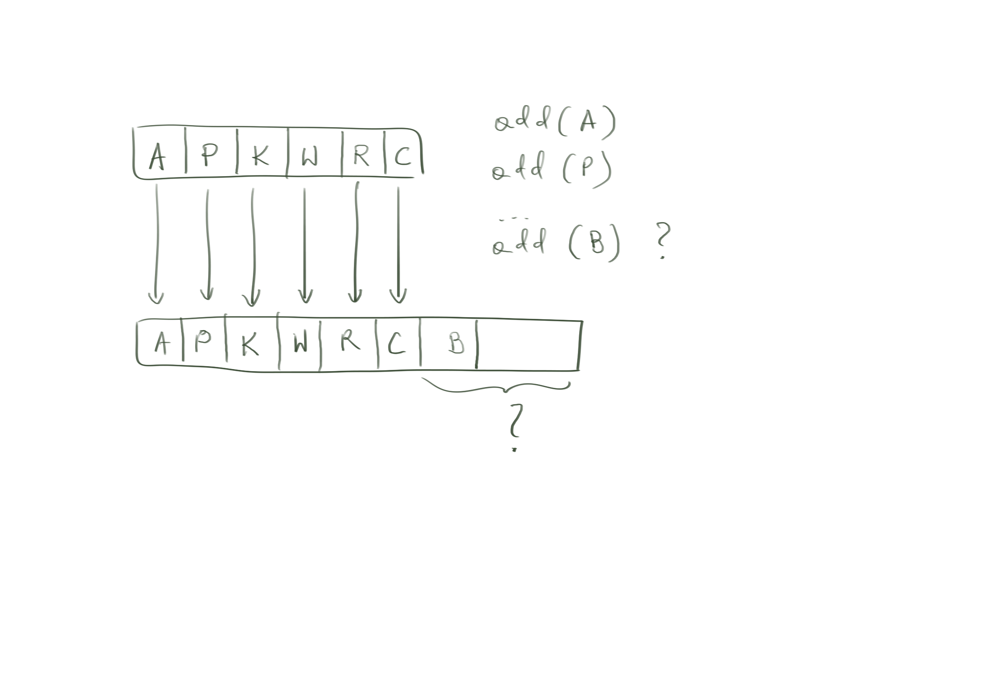
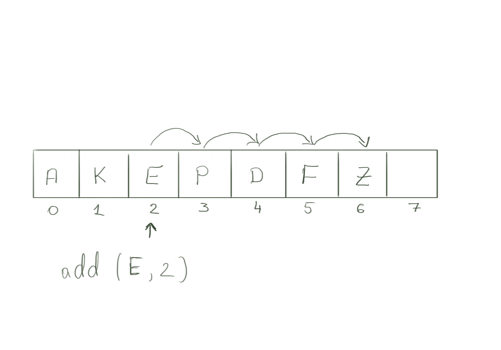
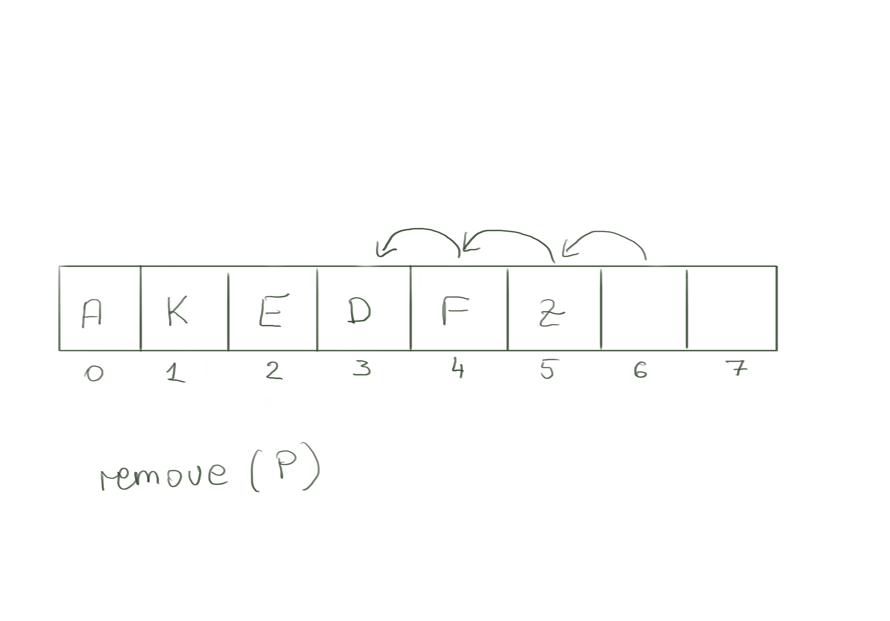

class: center, middle, title-slide # CSCI-UA 102 ## Data Structures <br> ## Lists (Part 2) .author[ Instructor: Joanna Klukowska <br><br><br> ] .license[ Copyright 2020 Joanna Klukowska. Unless noted otherwise all content is released under a <br> [Creative Commons Attribution-ShareAlike 4.0 International License](https://creativecommons.org/licenses/by-sa/4.0/).<br> Background image by Stewart Weiss<br>] --- layout:true template: default name: section class: inverse, middle, center --- layout:true template: default name: poll class: inverse, full-height, center, middle --- layout:true template: default name: breakout class: breakout, middle --- layout:true template:default name:slide class: slide .bottom-left[© Joanna Klukowska. CC-BY-SA.] --- ## `ArrayList<E>` as an Example of Array Based Implementation of a List Instead of creating our own implementation that is based on an array, we will look at the existing one implemented in Java: `ArrayList<E>` class. -- - What makes this approach different from a linked lists approach? - the data is stored in an array instead of in nodes -- - `ArrayList<E>` = an array (that can store any type of data) + operations that make everything easy -- .center80[ .box[ Where did the pirate store his loot? - In an ArrayList, because ArrayLists can grow! .right[Dana L., 2018] ]] -- - So how do they grow? And can we make it efficient? --- template: section # Growing the Array --- name: growing-array ## Growing the Array Adding to the end of an array is O(1), except for when we need to add to a completely full array when it is O(N). -- .center[ <video controls="controls" width="500" height="375" name="Video Name" src="img/05/ArrayList1.MOV"></video> ] --- template: growing-array .center[  ] - creating a new array and copying the data is fairly easy, but how much more room should we allocate? - if it is too large, then we have an array that is much too big for our data - if it is too little, then we might need to do this again, and again, and again --- template: growing-array ```java public boolean add(E element) { if (size >= array.length) { // make a bigger array and copy over the elements E[] bigger = (E[]) new Object[array.length * 2]; System.arraycopy(array, 0, bigger, 0, array.length); array = bigger; } array[size] = element; size++; return true; } ``` -- - where does the O(N) time come from in the above function -- - `arraycopy()` is linear, it runs in time proportional to the size of the array - but it is in practice faster than executing: ```java for (int i = 0; i < size; i++) bigger[i] = array[i]; ``` -- - so what is the performance of this function overall (not just sometimes O(1) and sometimes O(N))? --- ## Growing the Array - Amortized Analysis If the initial size of the array is N, then - .small[adding first element takes O(1)] -- - .small[adding second element takes O(1)] -- - .small[...] -- - .small[adding $N^{th}$ element takes O(1)] -- - .small[adding $N+1^{st}$ element takes O(N)] -- Intuitively, we have N \* O(1) + 1 \* O(N) to add N+1 elements -> this is still a constant time for each operation (almost). -- In __amortized analysis__ we are interested in the performance of a given operation on average - when we repeat the operation many time and calculate how much time it took divided by the number of repeats. (See [Amortized Analysis](https://en.wikipedia.org/wiki/Amortized_analysis) on Wikipedia for more formal details.) -- .center80[.yellowbox[ The add at the end (append) operation for an ArrayList has an amortized time performance of O(1) as long as the array size in increased by a multiplicative factor, not an additive factor. ]] -- - this means that we need to multiply the current size of an array by a constant to get the size of the bigger array: if N starts as 10, and the multiplicative constant is 2, the sizes will be: 10, 20, 40, 80, 160, ... -- - __not__ add some constant to the current size: if N starts at 10, and the additive constant is 2, the sizes would be: 10, 12, 14, 16, 18, ... --- template:section # Adding and Removing --- name: adding ## Adding at an Arbitrary Position If we want to add an element to an arbitrary position in the list, we will need to shift the values that are there to the higher indexes to make room for it. -- .center[ <video controls="controls" width="500" height="375" name="Video Name" src="img/05/ArrayList_add.mov"></video> ] --- template: adding .center[  ] This operation is O(N) because we need to shift the elements by one position to the right (higher indexes). --- name: removing ## Removing from an Arbitrary Position If we want to remove an element from an arbitrary position in the list, we will need to shift the values in the higher indexes to fill in the _whole_ that remains after removing an element. -- .center[ <video controls="controls" width="500" height="375" name="Video Name" src="img/05/ArrayList_remove.mov"></video> ] --- template: removing .center[  ] This operation is O(N) because we need to shift the elements by one position to the left (lower indexes). --- template: section # Comparing `ArrayList<E>` Objects for Equality --- ## `equals` method specification The `equals` method in the `ArrayList<E>` class is inherited from the `AbstractList<E>` class. ---- -- `public boolean equals(Object o)` Compares the specified object with this list for equality. Returns true if and only if the specified object is also a list, both lists have the same size, and all corresponding pairs of elements in the two lists are equal. (Two elements `e1` and `e2` are equal if (`e1==null ? e2==null : e1.equals(e2))`.) In other words, two lists are defined to be equal if they contain the same elements in the same order. __Implementation Requirements__: This implementation first checks if the specified object is this list. If so, it returns `true`; if not, it checks if the specified object is a list. If not, it returns `false`; if so, it iterates over both lists, comparing corresponding pairs of elements. If any comparison returns `false`, this method returns `false`. If either iterator runs out of elements before the other it returns `false` (as the lists are of unequal length); otherwise it returns `true` when the iterations complete. __Parameters__: `o` - the object to be compared for equality with this list __Returns__: `true` if the specified object is equal to this list -- .box[ Note that this specification allows us to use `equals` to compare different implementations of a list, for example an `ArrayList` instance with a `LinkedList` instance. The only requirement is that they contain the same elements in the same order. ] --- ## `equals` method implementation This is the code from `AbstractList<E>` class. ```java public boolean equals(Object o) { if (o == this) //check if the specified object is this list return true; if (!(o instanceof List)) //check if the specified object is a list return false; //iterate over both lists, comparing corresponding pairs of elements ListIterator<E> e1 = listIterator(); ListIterator<?> e2 = ((List<?>) o).listIterator(); while (e1.hasNext() && e2.hasNext()) { E o1 = e1.next(); Object o2 = e2.next(); if (!(o1==null ? o2==null : o1.equals(o2))) return false; } return !(e1.hasNext() || e2.hasNext()); } ``` --- ## `equals` method aternative implementation This is an alternative implementation of the same method. ```java public boolean equals(Object o) { if (o == this) //check if the specified object is this list return true; if (!(o instanceof List)) //check if the specified object is a list return false; //check if lists are of the same length if (this.size() != ((List<?>) o).size() ) { return false; } //iterate over both lists, comparing corresponding pairs of elements for (int i = 0; i < this.size(); i++ ) { E o1 = this.get(i); Object o2 = ((List<?>) o).get(i); if (!(o1==null ? o2==null : o1.equals(o2))) return false; } return true; } ``` -- What is the performance of this function? --- template:section # `ArrayList<E>` Summary --- ## `ArrayList<E>` - __Capacity__ of an `ArrayList<E>` is the size of the actual array used for storing data. - __Size__ of an `ArrayList<E>` is the number of elements that have been stored in it. $$ Capacity \geq Size $$ - An empty list will often have a non-zero capacity. - Capacity is not decreased as elements are removed (could be, but the `ArrayList<E>` class does not do it). But it can be reduced by an explicit call to `trimToSize()` -- __Amortized Performance__ .center80[.small[ | | front | back | index in the middle | |---|---|---|---| |adding| O(N) | O(1) | O(N) | |removing| O(N) | O(1) | O(N) | ]] -- __Performance for other functions__ .left-column2[.small[ |function | performance | |:---:|:---:| |`get(index)` | O(1) | |`set(index,element)`|O(1)| |`size()` | O(1) | |`isEmpty()` | O(1) | |`clear()` | O(N) .small[resets each value to `null`] | ]] .right-column2[.small[ |function | performance | |:---:|:---:| |`contains(object)`|O(N)| |`indexOf(object)`|O(N)| |`equals()` | O(N) | |`toArray()` | O(N) | |`sort()` | O(N logN) | ]] --- template:section # Examples and Things to Think About --- ## Implementing `contains` and `indexOf` Without looking at the source code of the `ArrayList<E>` class, implement the `contains` and `indexOf` methods. Use the documentation to find out exactly what they are supposed to do. Once you have your code, compare it to the one in the `ArrayList<E>` class and see how similar/different it is. - Is it equivalent (i.e., does your do do the same thing that the `ArrayList<E>` code does )? - Does it have the same performance? --- ## Binary search on an `ArrayList<E>` The `contains()` and `indexOf` methods provides a linear search for the `ArrayList<E>`. But we know that a binary search is much more efficient if the data is sorted. - Write a method `boolean isSorted (ArrayList<E> list )` that determines if the given list is sorted or not. - Write a method `int binSearch(ArrayList<E> list, E key)` that performs the binary search and returns the index of `key` or -1 if the `key` is not present in the `list`. - Write a method `int bestSearch(ArrayList<E> list, E key)` that first determines if the list is sorted or not, and selects to either use `binSearch` or `indexOf` method accordingly. Note that the above methods are NOT part of the `ArrayList<E> ` class. They should be implemented as stand alone methods. </optgroup>